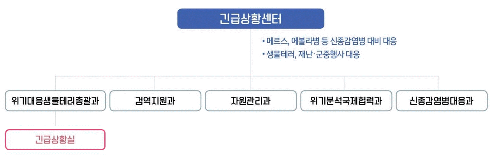

작성일 2019-05-15 최종수정일 2019-07-22 담당부서 위기대응생물테러총괄과 연락처 043-719-9386
87,635
긴급상황센터는 감염병 위기상황의 조기인지(early detection)와 신속대응(rapid response) 피해를 최소화
모든 감염병 정보를 통합적으로 관리하고, 유관기관과 협력하여 현장 대응을 지휘, 통제 및 지원
24시간 긴급상황실 운영을 통해 국내외 감염병 상시 감시·분석, 대응 및 국내외 공조 강화
위기시 상황평가 및 즉각대응팀 투입, 유관기관 협조 등 지휘통제
신종감염병 매뉴얼 개발 및 훈련, 항바이러스제·격리병상 등 자원 비축, 생물테러 등 위기 대비·대응
상시정보수집·분석 → 위기평가 → 신속대응 판단 → 역할 조정·지원 과정이 유기적으로 연계되도록 업무 협조 체계 구축
위기대응생물테러총괄과, 검역지원과, 자원관리과, 위기분석국제협력과, 신종감염병대응과로 구성되며 위기대응생물테러총괄과는 24시간 긴급상황실 운영
(흐름도) 24시간 상황실 운영을 통하여 국내·외 감염병 정보를 상시 수집 → 감염병 발생에 대한 상시 대응 체계 유지 → 감염병 위기상황 감지 시 신속히 위기 수준 평가 → 현장 초동 대응을 위한 즉각대응팀 파견 → 현장 상황 지휘 통제 → (유관기관 및 전문가와 공유하여 협력)